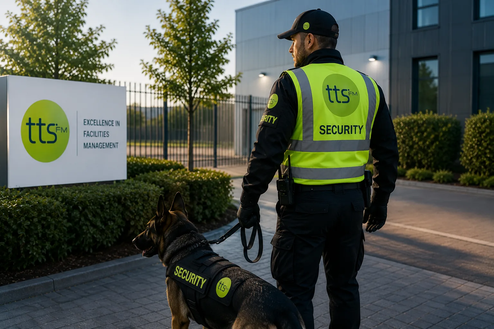

Our Partners & Accreditations


Expert specialist services for complex, safety-critical tasks across commercial and industrial environments — delivered by trained professionals with the right equipment and accreditations.
Specialist services require trained, certified operatives who follow strict safety protocols and bring the right equipment for every task. TTS FM delivers expert solutions for the tasks that demand technical expertise, specialist equipment, and stringent risk management — ensuring that even the most complex or safety-critical work is completed safely, compliantly, and to the highest standard.
From rope access and height safety to confined space entry and high-pressure jetting, TTS FM deploys specialist teams with the training, accreditation, and equipment required to work safely in some of the most demanding environments in the UK.
Every specialist task we undertake is preceded by thorough risk assessments and method statements, ensuring that all work is planned, controlled, and executed in full compliance with UK health and safety legislation. Our clients trust us to get the job done right — on time, safely, and without compromise.

Specialist and safety-critical work demands the right accreditations, the right people and the right controls — partnering with TTS FM gives you all three under one accountable contract.
Our specialist services are delivered within accredited management systems for quality, environment and health & safety. Every project carries a clear audit trail, giving you confidence and complete regulatory peace of mind.
We deploy certified operatives who are trained, assessed and continually developed in their disciplines. From rope access technicians to confined space teams, every specialist brings proven competence to the task.
Our height-safety work is carried out by IRATA-certified rope access teams using inspected, compliant equipment. We reach what scaffolding and conventional access cannot — safely and efficiently.
No specialist task begins without a thorough risk assessment and a detailed method statement. We plan and control every job so that safety, compliance and quality are designed in from the outset.
Combine specialist works with cleaning, maintenance, security and wider FM under a single contract and one point of contact — cutting cost, complexity and the overhead of managing multiple suppliers.
With regional teams and locally based operatives, we deliver consistent specialist services across the UK — combining national reach with rapid, area-specific mobilisation and response.
We follow a structured, safety-led process for every specialist contract — ensuring complex and high-risk work is properly assessed, planned, delivered and signed off to the highest standard.
With regional operating hubs and locally based teams, we deliver consistent, accredited specialist services nationwide — combining national reach with rapid, area-specific mobilisation.
Our local presence means faster mobilisation and teams who understand the specific demands of each region and sector.
We are trusted to deliver the most demanding, safety-critical works on time, safely and without compromise — every single time.
Every sector brings its own access challenges and compliance demands. We tailor our specialist services to the operational and regulatory needs of your industry.
Rope access, height safety and reactive works supporting active construction and infrastructure projects — providing safe access and fall protection where conventional scaffolding is not viable.
Confined space entry, high-level maintenance and specialist cleaning for plant and manufacturing environments — delivered with full rescue capability and compliance documentation at every stage.
Façade access, high-level maintenance and deep cleaning for offices, retail, education and healthcare estates — carried out with minimal disruption and full regard for occupied environments.
Partner with TTS FM for accredited specialist services delivered to the highest safety and quality standards across the UK.
Get a Free Specialist QuoteTTS FM delivers accredited specialist services across the UK, supporting organisations with the technical, safety-critical and high-access works that conventional teams cannot undertake. From rope access and confined space working to high-level maintenance and specialist cleaning, every project is planned, controlled and delivered to the highest standard.
With accredited quality, environmental and health & safety systems, trained specialist operatives and nationwide reach, we combine deep technical capability with complete accountability — delivering complex works safely, compliantly and without compromise on every contract.
MORE ABOUT US
Our specialist services are delivered within accredited management systems for quality, environment and health & safety, and our rope access work is carried out by IRATA-certified technicians. Every operative is trained and assessed in their discipline, and every project carries a clear compliance audit trail.
All work at height is preceded by a detailed risk assessment and a task-specific method statement. We use IRATA-certified rope access teams, inspected and compliant equipment, and appropriate PPE — reaching areas that conventional access methods cannot, while keeping people and premises safe.
Yes. We deploy confined space trained operatives with full rescue capability for entry, inspection and maintenance tasks. Every confined space job is risk-assessed, planned with a method statement and delivered in full compliance with UK health and safety legislation.
Absolutely. Our 'One Stop Shop' model lets you combine specialist works with cleaning, maintenance, security and wider facilities management under a single contract and one point of contact — reducing cost, complexity and the overhead of managing multiple suppliers.
Mobilisation timescales depend on the scope and complexity of the work, but our regional teams and established planning processes allow us to respond quickly. Following a site survey and risk assessment, we agree method statements and a clear mobilisation plan before any work begins on site.